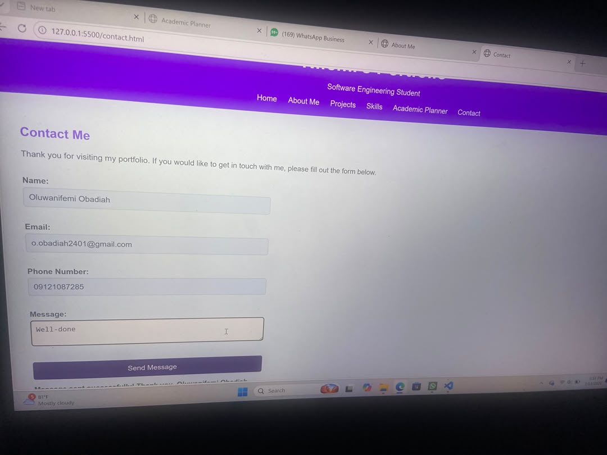
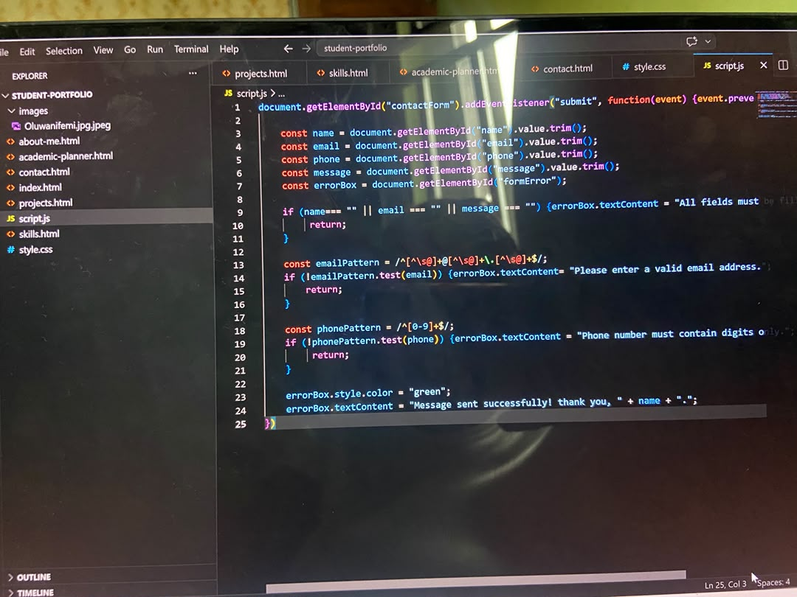
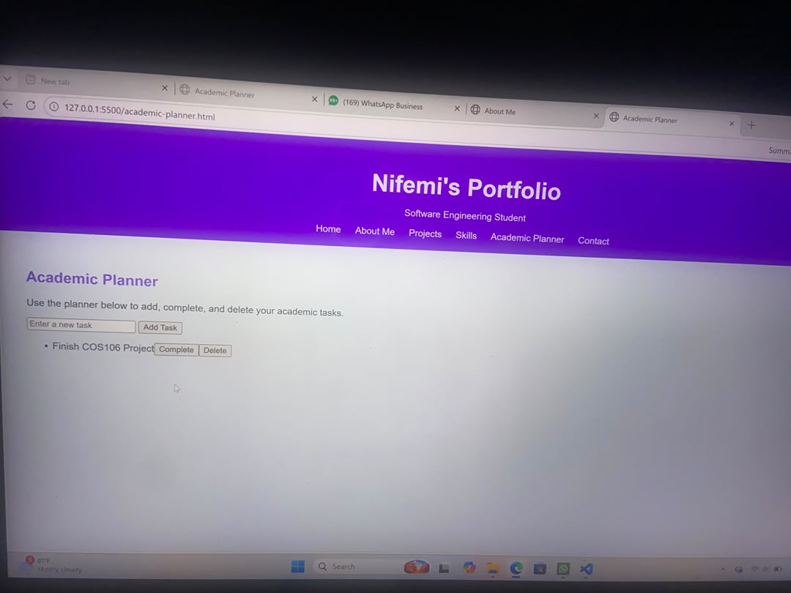

My Projects
Here are some of the projects i have worked on while developing my skills in software engineering and web developments.
Personal Portfolio Website

A beginner-friendly website created using HTML and CSS to showcase my background and journey as a Software Engineering Student.
Programming Practice Projects

A collection of small programmimg exercises created while learning programming concepts, improving my coding skills, and developing my understanding of problem solving.
Academic Planner

A simple academic planner designed to help students organize their courses, assignment and study schedules. This project demonstrates my abality to apply web development skills to solve everyday problems.